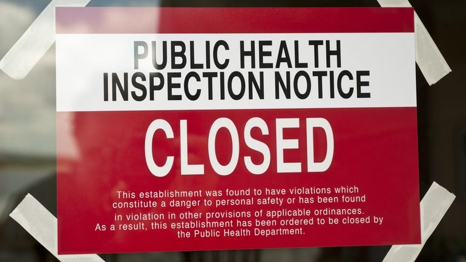
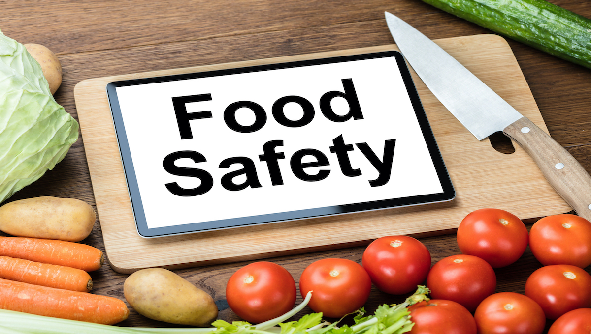
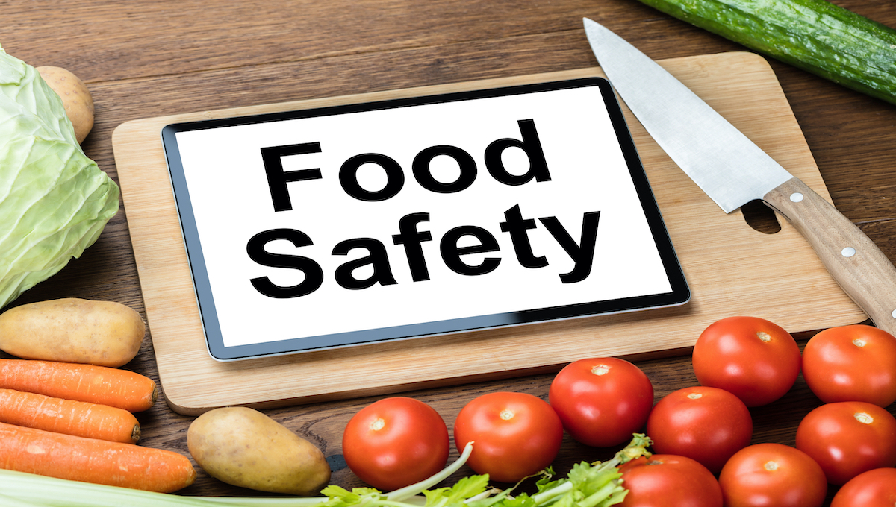
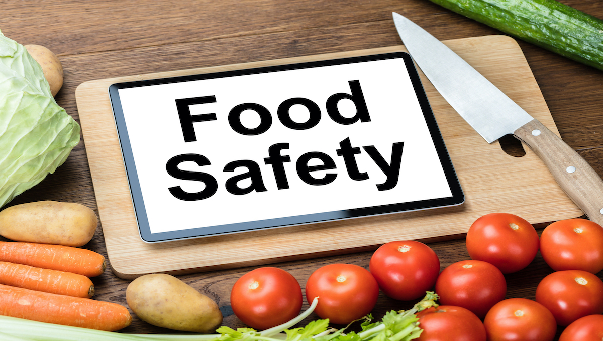
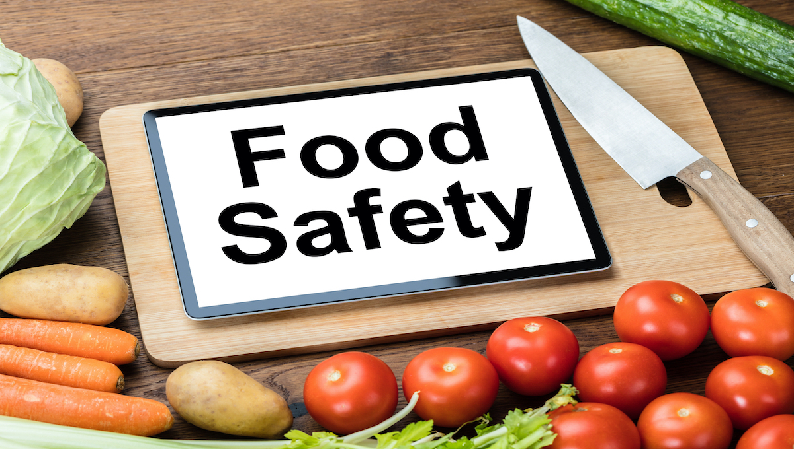

 



Putting faith in restaurant industries, the public trusts the food served to them is prepared and handled in a manner that prioritizes their health. However, the latest data from health.data.ny.gov, showcasing food establishment inspection results, illustrates a clear narrative regarding the issues and trends of Public Health and Food Safety in New York State.
Reports disclose information to the public from 2005 to 2024, including facility name, location, count of violations, noncritical versus critical violations, descriptions, inspection comments, and more. To analyze the influence of the COVID-19 pandemic on Food Safety in New York State, the data was cut from 2018 to 2024.
According to research at the National Library of Medicine, the lockdown and heavy restrictions on in-dining food services made consumers unable to fully enjoy in-dining experiences.
"Even in the absence of government restrictions on the in-dining food service, many consumers were and are reluctant to dine out," said researchers Seoki Lee and Sunny Ham. "Foodservice operations have been one of the primary sources of COVID-19 transmission. As COVID-19 is transmitted via droplets, aerosols, and direct contact."
The New York State Department of Health's Bureau of Community Environmental Health and Food Protection works to combat said transmission. They aim to protect public health by assuring that food service establishments are operated in a manner that eliminates hazards through design and management. Specifically, these mandated inspections focus on decreasing incidences of foodborne illnesses, like COVID-19, which can be caused by improperly handled or prepared foods.
In light of this, rising violations in post-pandemic NY, as highlighted in recent reports, enable consumers to make informed choices, while inspection intensity shows how the pandemic potentially propelled the industry's adoption of wellness practices.
In a phone interview, Brad Barnes, Director of Consulting and Industry Programs at The Culinary Institute of America, provided both insight and logic regarding the restaurant industry during the pandemic.
"The more risk there is, the more proactive the industry becomes in trying to address it. Yet, at the end of the day, it is a matter of how serious individual facilities take these precautions, which either causes violations or prevents them," said Barnes.
The COVID-19 pandemic reshaped many things, from our reliance on technology to school programming to food safety protocols. On account of worldwide devastation caused by mass illness, it is expected that Public Health and Safety concerns have increased in the post-pandemic era.
"The pandemic underscored the interconnectedness of health systems, emphasizing the importance of rigorous inspections. It opened a lot of eyes," noted Barnes.
When comparing pre-pandemic years (2018–2019) to the post-pandemic period (2023–2024), the dataset reveals more than a 10,000% increase in food service inspections. This trend demonstrates how mass health concerns can drive progress in safety practices, though some challenges may remain.
The pandemic pushed food service establishments in NYS to more actively ensure that the food and beverages they offer are safely stored, handled, prepared, and served in accordance with recognized industry standards.
The reports highlight both the negatives and positives of the COVID-19 outbreak. Despite the overwhelming negative outcomes, the pandemic also served as a wake-up call, exposing the disastrous consequences of not prioritizing health and safety. This reality check resulted in heightened concerns over public health and a renewed focus on regulatory enforcement in New York State, resulting in an increase in total inspections post-pandemic compared to the pre-pandemic period.
The dataset highlights establishments such as restaurants, soup kitchens and fast food chains, many of which local to Onondaga, Cortland and Oneida County.
According to health.data.ny.gov, among the 55 New York Counties reported, the majority of Food Service Inspections occurred in Onondaga County within the years 2018-2024. Nearly 1,700 inspections took place in Onondaga, with around 300 classified as critical.
Critical violations likely lead to contamination of food, associated with foodborne illness. Critical violations can include improper food temperatures, pests and lack of hand washing. Non-critical violations are considered less of a "priority", as they don't directly relate to foodborne illness and are typically minor general sanitation and maintenance issues.
"Counties with densely packed restaurant scenes and large or even inconsistent populations often face greater scrutiny," said Barnes. "Many local health departments are stretched thin, yet their responsibility is crucial in maintaining trust in the industry."
Identifying the county with the most inspections and critical violations exposes the areas where food service-related Public Health and Safety may be at risk. Yet, while certain establishments in Onondaga may be more prone to violations, this data also illustrates where the county’s priorities are likely focused.
The data has made it clear that Onondaga food establishments have attempted to hold themselves accountable to ensure compliance with health and safety standards. Despite the number of critical violations, the high frequency of inspections in Onondaga County, compared to others, makes reports of more serious violations understandable.
If more "densely packed" counties like Onondaga prioritized food establishment inspections, their violation rate would likely be higher as well. Nonetheless, these increases would eventually result in an overall decline in foodborne illness and improvement in general public health.
The COVID-19 pandemic forced food establishments to face new challenges. Given that Onondaga County has recorded the highest number of violations and inspections throughout the pandemic, comparing peak and post-pandemic data with neighboring counties—Madison, Cortland, Cayuga, and Oswego— can reveal the effects on this "high risk" region, revealing trends, regulation changes and persistent issues.
During the peak of the pandemic in 2020, Francesa’s Pizzeria and Restaurant in Madison County reported 5 Non-Critical violations, the highest total for that year. However, in 2024, the Empire Buffet in Onondaga County surpassed that total, reporting 16 Non-Criticals violations - nearly 3 times as many violations as 2020.
Both of these restaurants shared common issues related to facility maintenance and cleanliness. Item's 15A, 10A and 10B persisted over time, all involving poorly designed construction or uncleanable, corroded surfaces.
"An increase in violations doesn't always mean the risk is increasing," said Barnes. "There's a huge possibility that because of inspection increases -due to the pandemic- more issues are being found. Which can lead to more previously "hidden" issues being solved."
Although the data was insightful, it excluded key regions like New York City, Suffolk County and Erie County. Including these areas would have contributed to a more complete understanding about the state of food establishments in New York.
The lack of timeliness and consistency in regard to the data collection made it difficult to conduct research. The dataset contained various blanks in many sections. At the time of original collection, the data was only updated until September 2024. Yet, even with just 9 months of 2024 data, compared to the 12 months in the other years, the 2024 total violations still surpassed the prior years, emphasizing COVID-19's large influence. The data has only very recently been updated.
Making datasets more accessible, well rounded and open is crucial in a society that values transparency; one where health-related data can drive progress and create life saving solutions.